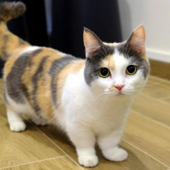
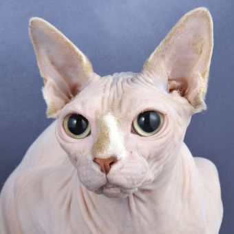

Ragdoll
Known for their striking blue eyes and floppy, relaxed posture when picked up, Ragdolls are affectionate, calm, and highly social, making them excellent family pets
Cats have up to 53 loosely connected vertebrae, allowing them to twist and squeeze through tight spaces, compared to 34 in humans.
Their flexible spine and strong back legs enable them to jump up to six times their body length in a single leap!
Cats walk on their toes, a trait called digitigrade, which helps them move silently.
Cats can make over 90–100 different sounds, including meows, purrs, chirps, and hisses.
They can recognize their owner’s voice and sometimes imitate human baby sounds to get attention!
Cats purr at frequencies between 25–150 Hz, which may help with relaxation and even tissue healing.
The oldest known pet cat was found in a 9,500-year-old grave in Cyprus, predating Egyptian depictions of cats by over 4,000 years!
Ancient Egyptians revered cats and worshipped a cat goddess named Bastet; killing a cat was punishable by death
The longest cat ever recorded measured 48.5 inches, and the oldest cat lived to 38 years
Cats can reach speeds of up to 30 mph, making them surprisingly fast for their size
Feed your cat a complete and balanced diet appropriate for their age and life stage, whether kitten, adult, or senior. You can offer wet food, dry kibble, or a combination, depending on your cat’s preference. Measure portions to prevent overeating and ensure fresh water is always available, ideally in multiple locations or using a water fountain to encourage hydration
Provide at least one litter box per cat, plus one extra, placed in quiet, private areas. Scoop daily, clean weekly, and refresh litter regularly. Large, shallow boxes are ideal, especially for older cats or those with mobility issues. Avoid startling your cat near the litter box to prevent negative associations
Establish a relationship with a trusted veterinarian for vaccinations, routine checkups, and guidance on health concerns. Monitor your cat for signs of illness or pain, and seek prompt veterinary care if needed. Regular preventive care helps avoid disease and ensures a longer, healthier life
Brush your cat regularly to reduce shedding and prevent hairballs, especially for long-haired breeds. Trim nails as needed and check ears and teeth for signs of infection or buildup. Grooming also strengthens your bond with your cat
Create a safe, comfortable home with cozy resting areas, scratching posts, and vertical spaces for climbing. Remove hazards like toxic plants and exposed wires. Provide a quiet space for your cat to retreat when stressed
Encourage natural behaviors such as stalking, pouncing, and climbing through interactive toys, puzzle feeders, and play sessions. Regular play reduces boredom, prevents destructive behavior, and strengthens your bond
Allow your cat to adjust at their own pace, especially when newly adopted. Use calm voices, slow movements, and treats to build trust. Avoid forcing interactions, and let your cat approach you on their terms
Known for their striking blue eyes and floppy, relaxed posture when picked up, Ragdolls are affectionate, calm, and highly social, making them excellent family pets

Famous for their short legs, these playful cats are energetic and curious, often compared to “sausage-cats” for their distinctive appearance

A hairless breed with suede-like skin, the Sphynx is friendly, affectionate, and thrives on human interaction, though their skin requires special care
Highly intelligent and active, Abyssinians love climbing and exploring, making them ideal for owners who enjoy interactive play
One of the smallest cat breeds, Singapura cats have large, expressive eyes and a playful, cheeky personality, often seeking warmth and comfort in cozy spots